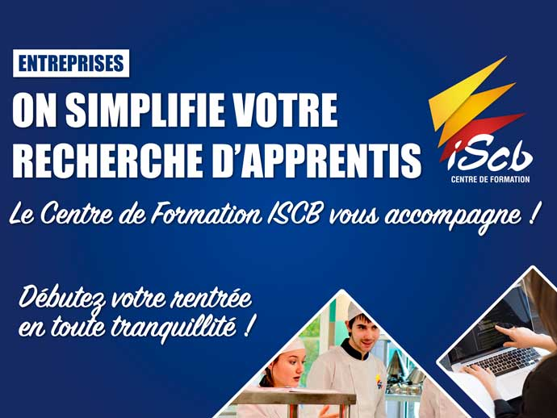

Actualités 2019/2020
Suivez les actualités et événements de Notre Dame La Riche et des différents établissements !
Notre Dame La Riche est de retour de vacances !
18 août 2020Les établissements de Notre Dame La Riche sont de retour de vacances pour bien préparer la rentrée des élèves et des étudiants !
Votre enfant est déjà inscrit ? Retrouvez dès maintenant tous les documents de rentrée et listes de fournitures classés par établissements !

Entreprises, on simplifie votre recherche d'apprentis !
12 août 2020Entreprises, vous êtes à la recherche d’apprentis pour bien débuter la rentrée ? Faites nous part de vos demandes, on simplifie vos démarches !
Le Centre de formation ISCB forme les étudiants dans de nombreux secteur d'avenir (hôtellerie, restauration, communication, audiovisuel, informatique, tourisme, commerce...) !
Pour consulter la liste de nos formations dispensées en apprentissage, rendez-vous ici.
Pour mémoire, le gouvernement a décidé de fortement augmenter l'aide à l'embauche d'un apprenti pour tout recrutement du 1er juillet 2020 au 28 février 2021.
Plus d’infos et nous faire part de vos besoins d’alternants
notredamelariche.fr ne prend pas de vacances !
28 juillet 2020Lycées, futurs étudiants, vous n'avez pas l'affectation souhaitée, pensez Notre-Dame La Riche.
Sur notre site, découvrez les formations proposées en BAC Pro, Technolgique, en BTS en formation initiale.
Même si nous sommes fermés jusqu'au 17 août 2020, vous pouvez vous préinscrire, nous reviendrons vers vous dès notre retour de vacances.
üëâ Pr√©inscription de la maternelle au BAC
Au plaisir d'échanger
Vacances d'été
17 juillet 2020Les établissements de Notre Dame La Riche sont fermés pour congé du lundi 20 juillet au lundi 17 août !
Durant cette période, vous pouvez toujours :
• Vous préinscrire pour la rentrée 2020 dans un de nos établissements de l'école aux lycées,
• Pour les préinscriptions concernant les BTS en formation initiale, merci de suivre ce lien
• Nous laisser un message via notre formulaire de contact
Nous reviendrons vers vous dès notre retour.
Bonnes vacances à tous !
Pendant cette période, prenez bien soin de vous et rendez-vous le mardi 18 août !
L'apprentissage une voie “royale” !
10 juillet 2020En 2019, La France comptait 491 000 apprentis, soit une hausse de + 16% par rapport à 2018.
Pour éviter que ces bons résultats ne soient affectés à la Rentrée prochaine par la crise sanitaire, le gouvernement encourage et incite les entreprises à continuer à recruter des salariés en contrat d’apprentissage par des mesures concrètes et les jeunes à choisir cette voie.
Pour les apprentis ou futurs apprentis : Prolongation à six mois du délai de signature d’un contrat d’apprentissage avec une entreprise
Pour les jeunes entrant en formation entre le 1er août et le 31 décembre 2020, un délai de 6 mois leur est accordé pour trouver une entreprise avec laquelle signer un contrat d’apprentissage.
Ils peuvent ainsi rester en centre de formation, sans contrat, pendant 6 mois (contre 3 mois avant). Durant cette période, le CFA est financé pour assurer son accueil.
Audiovisuel, Relation Client, Commerce, Vente... üëâ d√©couvrez les formations de BTS en alternance.
Pour les entreprises : Création d’une aide exceptionnelle au recrutement des apprentis
Aide financière de 5 000 euros pour un apprenti de moins de 18 ans 8 000 euros pour un apprenti majeur par contrat préparant à un BTS par alternance.
Pour les contrats signés à compter du 1er juillet 2020 et jusqu’au 28 février 2021, cette aide sera versée :
- aux entreprises de moins de 250 salariés sans condition ;
- et aux entreprises de plus 250 salariés à la condition qu’elles s’engagent à atteindre le seuil de contrats d’apprentissage ou de contrats de professionnalisation dans leur effectif en 2021, selon des modalités définies pas décret.
Pour accueillir un apprenti en BTS dans votre entreprise, üëâ on vous accompagne
Source : travail-emploi.gouv.fr

Les résultats du Bac 2020 sont tombés !
8 juillet 2020Les lycéens ont tous pu découvrir leurs résultats du bac hier !
üéâ F√©licitations √† tous les dipl√¥m√©s et bon courage aux √©l√®ves au rattrapage !
L'étape indispensable pour s'inscrire en études supérieures dans l'un de nos BTS au Pôle Enseignement Supérieur !

Notre dernière Info’News est arrivée !
24 juin 2020Au sommaire pour ce mois de juin :
üîπ Des mesures exceptionnelles pour l'apprentissage
üîπ Nos portes ouvertes sur RDV
üîπ Report versement Taxe d'apprentissage
üîπ Le BAC Pro Gestion-Administration change de nom
üîπ Un peu d'histoire...
Consulter l'info'news
Vous souhaitez retrouver l'ensemble de nos Info'News et découvrir toutes les actualités, activités et événements de nos différents établissements, rendez-vous ici !
Des aides exceptionnelles pour les entreprises concernant l'apprentissage
5 juin 2020Le gouvernement a annoncé ce jeudi un plan pour soutenir l’apprentissage ! L’une des mesures les plus importantes porte sur une aide exceptionnelle à l’embauche d’apprentis.
Cette aide est éligible du CAP aux BTS sans condition pour les entreprises de moins de 250 salariés ! Grâce à cette mesure, les alternants de 20 ans ou moins n’auront aucun coût pour les entreprises.
Vous recherchez un apprenti pour la rentrée prochaine ? On simplifie vos démarches : exprimez-nous vos besoins pour la rentrée 2020 via notre formulaire !
Nous vous permettons de trouver facilement un apprenti en formation au sein de l'Enseignement Supérieur Notre Dame La Riche ou du Centre de Formation ISCB pour la rentrée prochaine !
• Consulter la liste de nos formations dispensées en apprentissage
• Toutes les informations sur cette mesure
Pourquoi choisir un BTS en Alternance ?
13 avril 2020Choisir un BTS en Alternance, c'est être apprenti pendant les 2 ans de formations :
• Etudiant mais surtout salarié
• alterner formation théorique au sein du Centre de formation ISCB et formation pratique chez un employeur
• un plus pour trouver du travail rapidement en fin de formation
• un investissement fort (cours, entreprise et révision)
• être indépendant financièrement
Au sein de Notre-Dame La Riche et du Centre de Formation ISCB, c'est 9 BTS en Alternance qui vous sont proposés.
Détails et inscription (hors Parcoursup) sur notre page bts
#bts #alternance #apprenti #audiovisuel #assurance #communication #GestiondelaPME #managementcommercialopérationnel #managementenhôtellerierestauration #négociationetdigitalisationdelarelationclient #servicesinformatiquesauxorganisations #tourisme #iscb #notredamelariche
De la lecture et de l'audio
07 avril 2020En cette période de confinement, nous avions envie de vous faire partager quelques liens qui vous permettent de télécharger gratuitement des livres bien sûr, des manuscrits, des revues, des partitions ou des enregistrements sonores.
Pour les plus jeunes, des contes, albums à colorier et illustrations anciennes.
üëâ Gallica, la biblioth√®que num√©rique de la Biblioth√®que Nationale de France. Feuillez le document num√©ris√© ou t√©l√©chargez l'epub.
üëâ Biblioth√®que num√©rique mondiale.
üëâ FNAC ebooks t√©l√©chargeables gratuitement apr√®s inscription lisible sur tablette, smartphone et ordinateur via iBooks sur Mac et Calibre (t√©l√©chargement gratuit) sur PC.
üëâ CULTURA 3 000 livres num√©riques, en format ePub ou PDF gratuitements. Les grands auteurs classiques Victor Hugo, Jane Austen, Edgar Allan Poe, Charlotte Bront√´, Alexandre Dumas‚Ķ.
üëâ Fables de La Fontaine par Fabrice Luchini Un compte Instagram sp√©cialement pour cette p√©riode de confinement. Chaque jour une fable. Une explication de texte autant qu‚Äôune le√ßon de th√©√¢tre et un moment de po√©sie !
üëâ Lis-moi une histoire : la biblioth√®que Albin michel Jeunesse Un conte inoubliable chaque jour en partenariat avec RTL. A vous de faire votre choix !
Source : Apel Association des parents d'élèves de l'enseignement libre
26 mars 2020
Tous mobilisés !
Tous mobilisés, Enseignants, Professeurs, Directeurs des Etudes depuis le début de cette crise sanitaire et de la période de confinement avec l'outil de communication EcoleDirecte
pour accompagner les élèves, collégiens, lycées, étudiants et pour leur permettre de continuer aussi bien que possible la poursuite de leur scolarité et leur étude.
Ensemble, nous saurons relever ce nouveau challenge !!
#ecole #college #lyceegénéral #lycéeprofessionnel #lycéetechnologique #enseignementsupérieur #centredeformation #ecolehotelière #notredamelariche
19 mars 2020
Crise CORONAVIRUS : Report Portes Ouvertes
Compte tenu de la crise sanitaire, nous sommes dans l'obligation de reporter nos Portes Ouvertes “de la maternelle aux BTS” programmées le samedi 21 mars.
Vous souhaitiez en profiter pour venir découvrir nos établissements et réaliser l'inscription pour l'année prochaine.
Nous vous conseillons d'utiliser les formulaires en ligne :
üëâ Ecole Maternelle ou El√©mentaire : D√©tails | Pr√©inscription
üëâ Coll√®ge : D√©tails | Pr√©inscription
üëâ Lyc√©e g√©n√©ral : D√©tails | Pr√©inscription
üëâ Lyc√©e Technologique : D√©tails | Pr√©inscription
üëâ Lyc√©e Professionnel : D√©tails | Pr√©inscription
üëâ Coll√®ge et Lyc√©e Deuxi√®me Chance : D√©tails | Pr√©inscription
üëâ Ecole H√¥teli√®re : D√©tails | Pr√©inscription
üëâ BTS Audiovisuel en alternance : D√©tails et inscriptions
üëâ BTS Assurance en alternance : D√©tails et inscriptions
üëâ BTS Communication, Formation initiale ou en alternance : D√©tails et inscriptions
üëâ BTS Gestion de la PME en alternance : D√©tails et inscriptions
üëâ BTS Management Commercial Op√©rationnel Formation initiale ou en alternance : D√©tails et inscriptions
üëâ BTS Management en H√¥tellerie Restauration Formation initiale ou en alternance, 3 options : D√©tails et inscriptions
üëâ BTS N√©gociation et Digitalisation de la Relation Client Formation initiale ou en alternance : D√©tails et inscriptions
üëâ BTS Services Informatiques aux Organisations en alternance : D√©tails et inscriptions
üëâ BTS Tourisme Formation initiale ou en alternance : D√©tails et inscriptions
Pour mémoire, comme indiqué dans notre précédente actualité, le standard téléphonique ne sera ouvert que tous les matins de 9h à 12h, nous vous recommandons donc d'utiliser les moyens électroniques (mail ou page contact) pour toute demande d'informations.
Au plaisir d'échanger
17 mars 2020
Informations CORONAVIRUS - COVID-19
Informations CORONAVIRUS - COVID-19
Mardi 17 mars
Suite à une réunion (en comité restreint pour respecter les règles sanitaires) qui s'est déroulée ce matin, seuls les enfants des personnes soignants qui le désirent seront accueillis dans les établissements Notre-Dame La Riche conformément aux directives gouvernementales.
Le standard téléphonique sera ouvert tous les matins de 9h à 12h, nous vous recommandons donc d'utiliser les moyens électroniques (mail ou page contact ou page préinscription du site web) pour tout renseignement.
Les familles des élèves scolarisées au sein des établissements Notre-Dame La Riche ont reçu une information détaillée via “EcoleDirecte”
Pour retrouver les consignes gouvernementales qui permet de vaincre cette pandémie, suivre ce lien.
Bon courage à toutes et tous, bonne santé et au plaisir d'échanger.
PS : ces mesures sont susceptibles d'évoluer, tout nouveau changement fera l'objet d'une nouvelle actualité.
16 mars 2020
Informations CORONAVIRUS - COVID-19
Conformément aux directives gouvernementales, les établissements de l'Institution Notre-Dame La Riche sont fermés aux enfants, collégiens, lycéens, étudiants et public jusqu'à nouvel ordre.
Seuls sont accueillis les enfants des personnels de santé.
Notre accueil administratif reste ouvert aux horaires habituels à ce jour pour tout renseignement.
Pour toute préinscription, merci d'utiliser le formulaire prévu à cet effet, nous reviendrons vers vous au plus vite.
Pour retrouver les consignes gouvernementales pour vaincre cette pandémie, suivre ce lien.
02 mars 2020
Comment verser votre taxe d'apprentissage ?
Les lycées (Technologique et Professionnel) Notre Dame La Riche sont habilités à recevoir la taxe d'apprentissage !
Pour 2020, les modalités de Collecte de la Taxe d’Apprentissage ont changé. La Taxe d’Apprentissage est aujourd’hui calculée sur 0,68% de votre masse salariale 2019.
En confiant votre taxe d’apprentissage au lycée professionnel et/ou technologique Notre Dame La Riche, vous avez la possibilité de donner du sens à votre versement en contribuant à l’innovation constante des formations de vos futurs collaborateurs, à la qualité des enseignements pédagogiques dispensés dans ces établissements et au développement de filières d'avenir (numérique, commerce, vente, hôtellerie, restauration...) !
Pour découvrir les nouvelles modalités pour 2020 et les étapes pour nous confier votre taxe d'apprentissage, rendez-vous ici !
24 fév. 2020
Nos prochaines portes ouvertes tous niveaux, événement REPORTÉ
Les établissements de Notre Dame La Riche vous donne rendez-vous lors de leurs portes ouvertes le samedi 21 mars de 9h30 à 13h :
• La Micro-Crèche en partenariat avec Koala Kids
• L'Ecole maternelle
• L'Ecole élémentaire
• Le Collège
• Le Lycée Général
• Le Lycée Technologique
• Le Lycée Professionnel
• Le Collège et Lycée Deuxième Chance
• L'Ecole hôtelière
• L'Internat
• L'ISCB, pôle d'Enseignement supérieur
24 fév. 2020
BTS Métiers de l'Audiovisuel à Notre Dame La Riche
Une nouveauté en Région Centre, le BTS Métiers de l'audiovisuel à Notre Dame La Riche !
L'ISCB Centre de formation propose pour la rentrée 2020 le BTS Métiers de l'Audiovisuel en formation par apprentissage !
Vous pouvez découvrir plus en détail la formation en venant nous rencontrer lors de nos portes ouvertes le samedi 21 mars de 9h30 à 13h !
19 fév. 2020
Notre dernière newsletter est disponible !
Quelques actualités autour des établissements de Notre Dame La Riche en images sont à découvrir (Carnaval de l'école, Concert, Compétition de tennis de table, Rencontre école-entreprises...) !
Vous pouvez retrouver l'ensemble de nos newsletters ici !
06 fév. 2020
Un petit déjeuner rencontre Ecole-Entreprise
L’Ecole Hôtelière de Notre Dame La Riche vous invite à une rencontre Ecole/Entreprise lors d’un petit déjeuner le jeudi 13 février de 8h30 à 10h30 au restaurant de formation La Gabarre !
Notre Dame La Riche vous propose de faire connaissance avec d’autres chefs d’entreprises à l’occasion d’un petit déjeuner/brunch préparé par les élèves hôteliers. Viennoiseries, pains, fruits, oeufs… au menu !
Dans une ambiance conviviale, vous aurez l’occasion d’échanger avec d’autres dirigeants et nos Responsables de formation présents pour cet événement.
Le nombre de places étant limité, nous vous invitons à confirmer votre présence via notre formulaire.
Pour tout renseignement, merci de nous joindre au 06 22 58 07 56.
09 janv. 2020
Portes Ouvertes Tous Niveaux
Le vendredi 24 janvier de 17h à 20h et le samedi 25 janvier 2020 de 9h30 à 13h, l'ensemble des établissements de l'Institution Notre Dame La Riche vous ouvrent leurs portes.
Une bonne occasion pour rencontrer les enseignants et formateurs de tous niveaux et pour trouver la formation qui permettra l'épanouissement de votre enfant ou étudiant.
08 janv. 2020
Notre Dame La Riche présent au Forum de l'orientation 2020 de Tours
Notre Dame La Riche est présent au forum de l’orientation de Tours 2020 !
Les vendredi 17 et samedi 18 janvier de 9h à 17h
Parc des Expositions - Avenue Camille Chautemps, 37000 Tours
À découvrir sur place avec les équipes pédagogiques et les étudiants de l’école :
• La Micro-Crèche
• Le Lycée Général
• Le Lycée Technologique
• Le lycée Professionnel
• L’École Hôtelière
• L’enseignement Supérieur
• Le Centre de formation ISCB
Vous pourrez nous poser toutes vos questions sur les différentes formations ou options pendant ces deux journées !
Que vous soyez au collège, lycée ou dans l’enseignement supérieur en quête d’informations pour votre projet d’orientation, ou parents à la recherche de renseignements, on vous attend nombreux !
Vous n’êtes pas disponible, rendez-vous à nos portes ouvertes le vendredi 24 de 17h à 20h et le samedi 25 janvier de 9h30 à 13h ! (plus d'infos)
28 déc. 2019
Bonnes Fêtes
A l’aube de cette nouvelle année 2020 et au nom de toute la communauté éducative de l’Institution Notre-Dame La Riche,
je vous présente nos meilleurs vœux de joie et d’espérance pour vous et votre famille.
Benoît VISSE,
Directeur coordinateur Institution Notre-Dame La Riche
L'Institution Notre-Dame La Riche sera fermé du lundi 23 décembre 2019 au vendredi 3 janvier 2020.
Au plaisir de vous retrouver dès le lundi 6 janvier.
24 déc. 2019
Un nouveau site pour mieux vous guider !
Le site que vous êtes actuellement en train de visiter est en cours de développement et sera complètement finalisé au début de l'année 2020 !
Vous pouvez y découvrir nos formations, nos actualités et tous les outils pour prendre contact avec nos secrétariats et équipes pédagogiques ou pour préparer vos inscriptions pour la rentrée 2020.
Pour accéder à des informations supplémentaires sur l'Institution Notre Dame La Riche, vous avez toujours la possibilité de consulter l'ancien site encore en ligne ndlr.fr (cet ancien site n'est pas adapté aux Smartphones) ou le blog de l'institution.